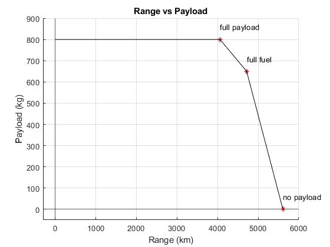

MTOW = 4750;
Wempty = 2810;
Wmaxfuel = 1225;
Crew = 1;
WCrew = 65;
Passenger = 8;
WPassenger = 75;
WLuggage = 25;
LtoD = 15;
eta = 0.8;
ct = 7.16e-07;
Takeoff = 0.995;
Climb = 0.98;
Descent = 0.99;
Loiter = 0.987;
Land = 0.992;
fuelweight = MTOW - (Wempty + Crew * WCrew + Passenger * (WPassenger + WLuggage));
fuelweight = fuelweight * Takeoff * Climb;
M1 = Wempty + Crew * WCrew + Passenger * (WPassenger + WLuggage) + fuelweight;
fuelweight = fuelweight - (fuelweight * (1 - Descent) + fuelweight * (1-Loiter) + fuelweight * (1 - Land));
M2 = M1 - fuelweight;
RangeA = eta / ct * LtoD * log(M1 / M2) * (1 / 1000);
PayloadA = Passenger * (WPassenger + WLuggage);
WLuggage = MTOW - (Wmaxfuel + Wempty + Crew * WCrew + Passenger * WPassenger);
WLuggage = WLuggage / 8;
fuelweight = Wmaxfuel * Takeoff * Climb;
M1 = Wempty + Crew * WCrew + Passenger * (WPassenger + WLuggage) + fuelweight;
fuelweight = fuelweight - (fuelweight * (1 - Descent) + fuelweight * (1-Loiter) + fuelweight * (1 - Land));
M2 = M1 - fuelweight;
RangeB = eta / ct * LtoD * log(M1 / M2) * (1 / 1000);
PayloadB = Passenger * (WPassenger + WLuggage);
fuelweight = Wmaxfuel * Takeoff * Climb;
M1 = Wempty + Crew * WCrew + fuelweight;
fuelweight = fuelweight - (fuelweight * (1 - Descent) + fuelweight * (1-Loiter) + fuelweight * (1 - Land));
M2 = M1 - fuelweight;
RangeC = eta / ct * LtoD * log(M1 / M2) * (1 / 1000);
PayloadC = 0;
hold on
grid on
plot(RangeA,PayloadA,'r*')
text(RangeA,PayloadA + 60,"full payload")
plot(RangeB,PayloadB,'r*')
text(RangeB,PayloadB + 60,"full fuel")
plot(RangeC,PayloadC,'r*')
text(RangeC,PayloadC + 60,"no payload")
plot([0 RangeA], [PayloadA PayloadA],'k')
plot([RangeA RangeB], [PayloadA PayloadB],'k')
plot([RangeB RangeC], [PayloadB PayloadC],'k')
xlim([-300 6000])
ylim([-50 900])
xline(0);
yline(0);
title("Range vs Payload")
xlabel("Range (km)");
ylabel("Payload (kg)");
